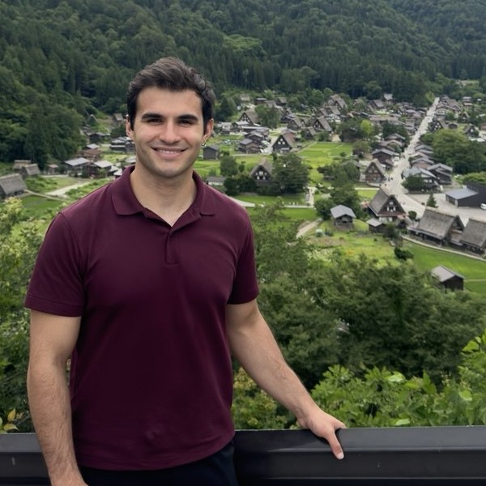

I am a third-year PhD student in Statistics at Bocconi University, advised by Botond Szabó. Previously, I earned a M.Sc. and a B.Sc. in Mathematical Engineering from Politecnico di Milano.
My research interests lie in mathematical statistics and statistical machine learning, particularly in robust statistics and Bayesian nonparametrics. Other possible topics I would like to explore are computational statistics and connections between Bayesian methods and Foundation models.
I enjoy understanding why methods work and what guarantees they offer, especially in challenging statistical settings (e.g. due to contaminated data or model misspecification).

Exercise classes (planned for Spring 2027):
Teaching Assistant, 2025–2026: